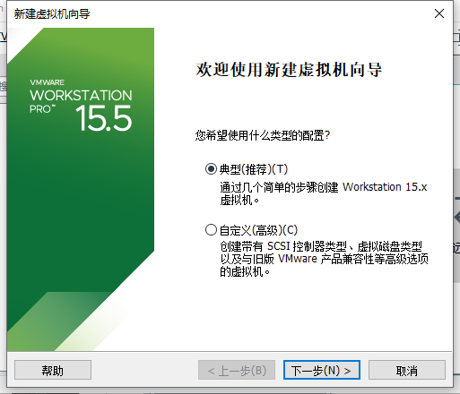
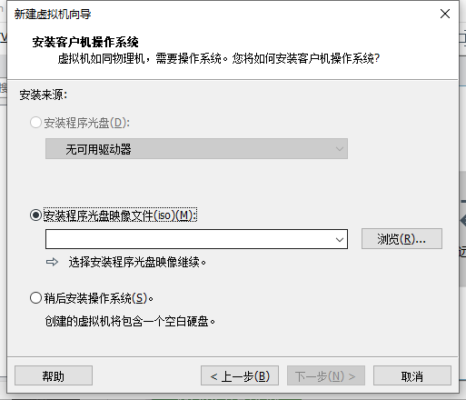
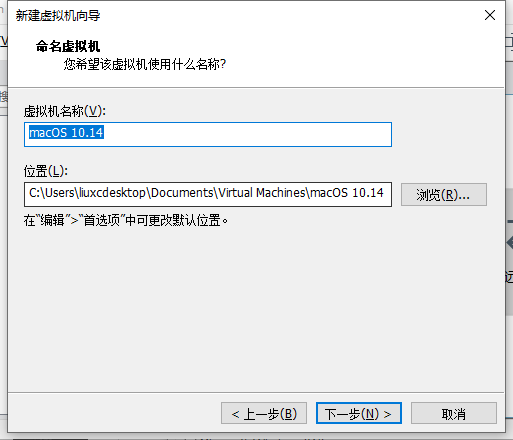
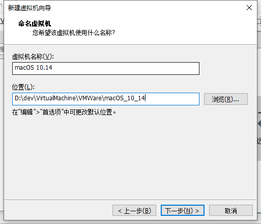
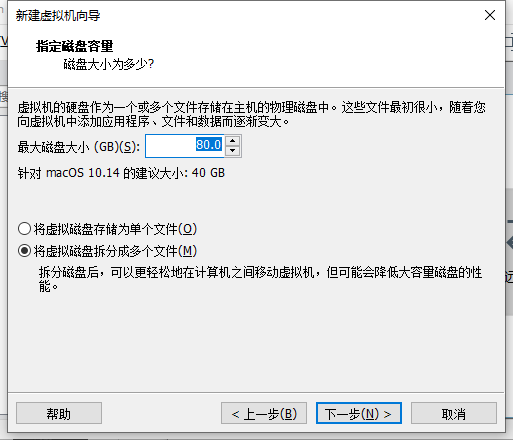
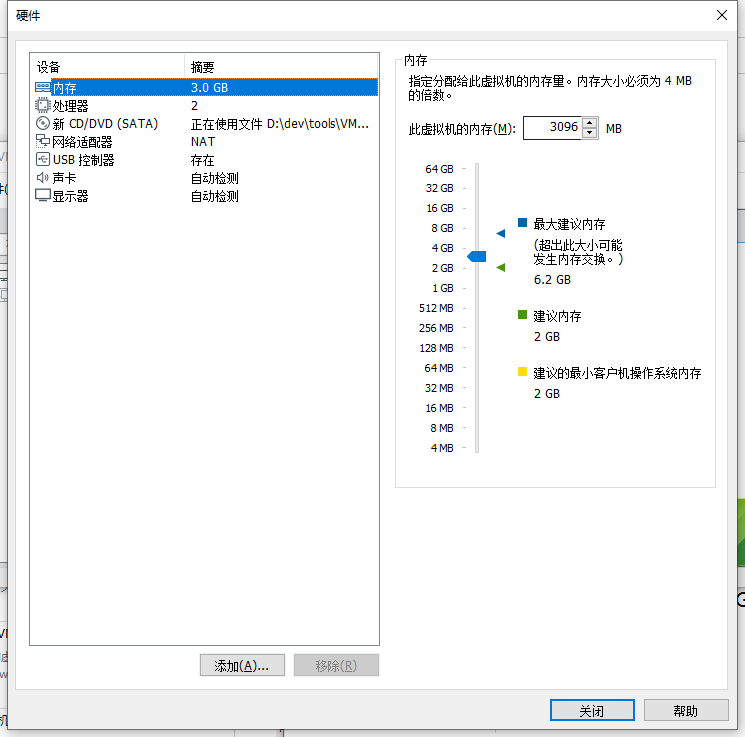
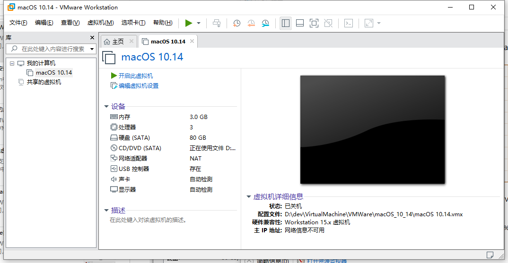

创建macOS虚拟机
此处介绍在Win中用VMWare创建macOS的虚拟机。
在VMWare的主页，点击加号➕ 创建新的虚拟机：

进入： 新建虚拟机向导

安装客户机操作系统

去选择之前的镜像文件：cdr或ISO
- D:\dev\tools\VMWare+macOS\macOS
MacOS_Mojave_10.14.4_x5(www.w3h5.com推荐下载这个).iso

安装程序光盘镜像文件(iso)：

在 选择客户机操作系统 中，选择：Apple Mac OS X

此次选的是，相对版本还算新一点的：macOS 10.14

命名虚拟机

此处默认是：macOS 10.14
- 可选
- 更改保存位置
- D:\dev\VirtualMachine\VMWare\macOS_10_14
- 
- D:\dev\VirtualMachine\VMWare\macOS_10_14
- 更改保存位置
指定磁盘容量
此处默认：40GB

- 可选
- 去把磁盘大小改大一些，比如80G之类的，防止后期不够用
- 
- 去把磁盘大小改大一些，比如80G之类的，防止后期不够用
已准备好创建虚拟机

自定义硬件
点击 自定义硬件 可以针对自己的情况，调整参数。
其中的要点：
- 内存
- 如果自己电脑内存很大，可以适当给虚拟机多分配一点
- 此处自己内存是
8G，虚拟机内存默认2G，后来改为3G- 
- 此处自己内存是
- 如果自己电脑内存很大，可以适当给虚拟机多分配一点
CPU
- 此处是：Intel Core i5-9400
- 最后设置为：
- 处理器CPU：
1个- 每个CPU：
3个内核 - 总共：
3核
- 每个CPU：
- 图
- 处理器CPU：
- 其中 不要选：
Intel VT-x/EPT或AMD-V/RVI- 详见：
- 【已解决】VMWare的虚拟机配置中虚拟化引擎 虚拟化Intel VT-x/EPT或AMD-V/RVI作用和是否应该勾选
- 详见：
- 最后设置为：
- 此处是：Intel Core i5-9400
细节详见：
- 【已解决】VMWare安装macOS时自定义硬件参数设置

继续，即可创建出来虚拟机：
